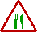

 Félig meddig ehető
Termőtest: süvege gömb vagy tojásdad alakú, 4-10 cm átmérőjű; széle folyamatosan megy át a tönkbe; a süveget méhsejtszerű, többé- kevésbé rendezett bemélyedések borítják, ezek felületén helyezkedik el a tráma; színe a fehérestől a bőrszínűn át a sötét szürkésbarnáig terjedhet; a tönkje fehér, viasszerű, törékeny, hosszanti ráncos; a termőtest belsejét egyetlen nagy üreg teszi ki, a belső felszín szemcsés, fehér színű. Tráma, termőréteg: a süveg felszínén.
Hús: fehér, vékony, viasszerű, törékeny, jóízű és szagú.
Termőhely és idő: réteken, kertekben, bokros helyeken, ligeterdőkben nagy mennyiségben, márciustól áprilisig.
Étkezési érték: ehető, ízletes gomba, de nyersen fogyasztva allergiát okozhat. (!!!)
Megjegyzés: számos különböző alakú és színű változata ismert. Más, szintén ehető kucsmagomba fajokkal (hegyes kucsmagomba, fattyú kucsmagomba stb.), valamint a gyűrt lemezes vagy agyvelőszerű, többüregű, mérgezőnek tartott papsapkagomba (redős papsapkagomba, óriás papsapkagomba stb.) fajokkal téveszthető össze.